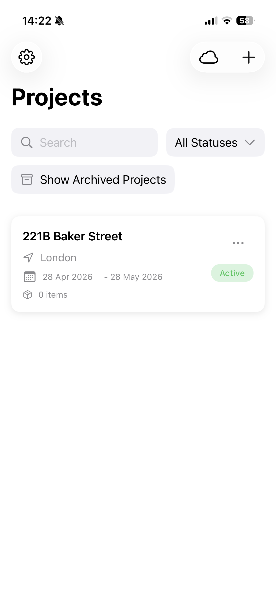
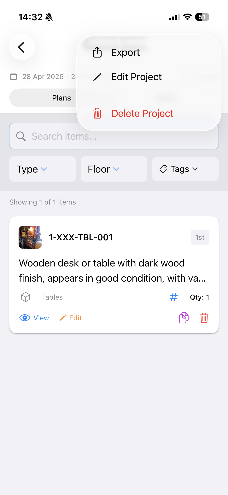
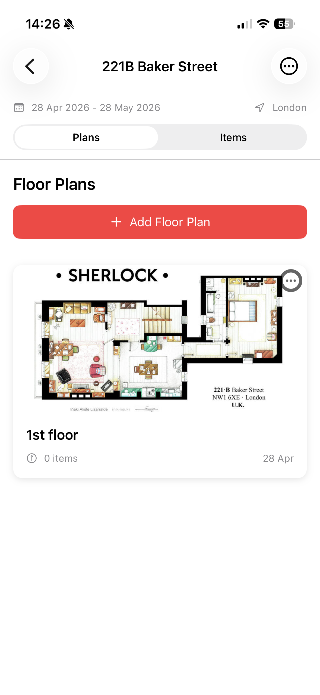
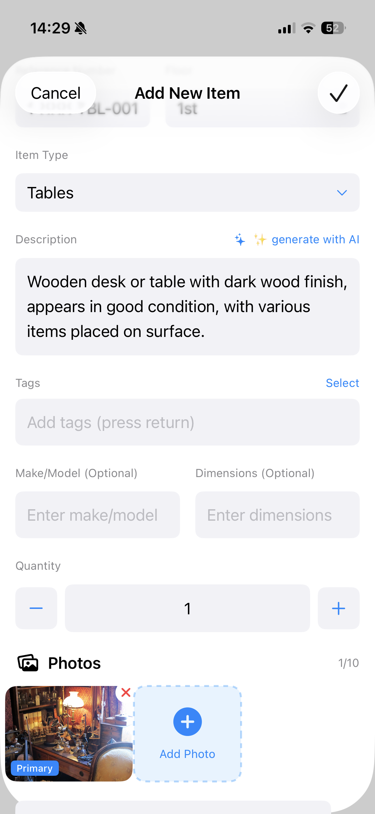
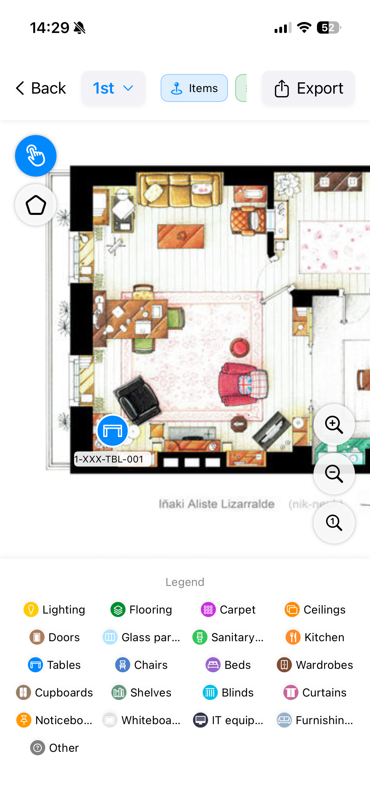

01
Manage projects
Create or review project records, location, dates, status, and the working project list before starting a survey.

Private client beta for iPad and iPhone
AI Inventory helps teams record items with photos, place them on floor plans, and turn the survey into a useful export for review.
This is a beta build. Please expect changes and send feedback on anything confusing, missing, or broken.

Focus on the end-to-end beta workflow: set up a project, add plans, capture inventory, mark item locations, and export the results.
Create or review project records, location, dates, status, and the working project list before starting a survey.

Add the plan for each floor so the inventory can be tied back to the exact space being surveyed.

Add items with photos, quantity, type, and notes. Optionally use AI to draft the item description, then mark the item directly on the floor plan.


Generate the project output and check that the PDF/report is clear enough to share after the site survey.
Use the app as if you were preparing a real project survey, then send notes on anything that slows you down.
Install Apple TestFlight if it is not already on your device.
Open the beta link and install AI Inventory.
Create or open a project and check whether the project fields match how you work.
Add a floor plan for the project.
Capture items with photos, notes, and floor plan markers.
Export the PDF/results and report anything unclear, incomplete, or unreliable.
Please report confusing steps, missing fields, capture issues, export problems, floor plan marker problems, crashes, or any workflow that does not match how a real site survey is done.